GitHub Copilotワークショップへようこそ！このワークショップでは、GitHub Copilot を使ってコードの解説や改善を行う方法を学びます。 GitHub Copilot Chat は Chat 体験を通じて AI との対話を行うことができます。 ぜひ、このワークショップを通じて GitHub Copilot の使い方を学んでみましょう。

本日のゴール
- GitHub Copilotの各種機能を理解する
- エージェントモードを使って、新規にアプリケーションを開発する
前提条件
- GitHub Copilotのライセンスがあること
- GitHubアカウントを持っていること
このワークショップでは、以下のGitHub上のテンプレートリポジトリを使用します：
https://github.com/Songmu-lab/2026-Github-Copilot-Workshop-Go
ステップ1: テンプレートからリポジトリを作成する
まず、上記のテンプレートリポジトリをブラウザで開き、そこから自分のリポジトリを作成します：
- テンプレートリポジトリ（https://github.com/Songmu-lab/2026-Github-Copilot-Workshop-Go）をブラウザで開く
- 右上の Use this template ボタンをクリックし、Create a new repository を選択
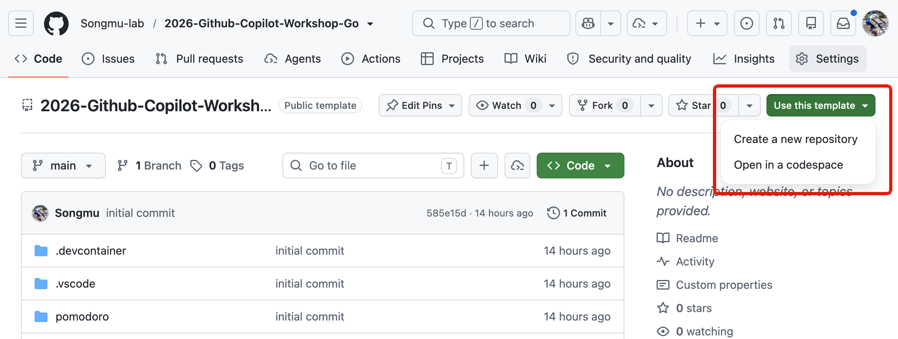
- リポジトリ作成画面で、リポジトリ名を入力し Create repository ボタンをクリック
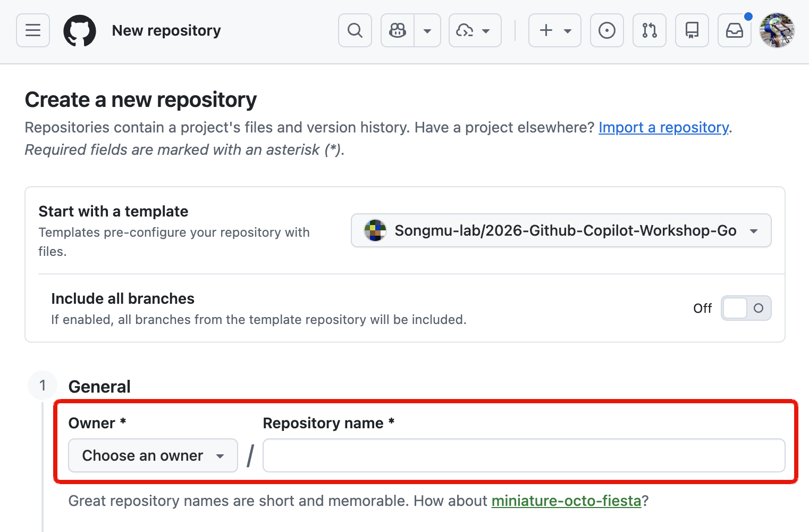
本日利用するオーガニゼーション配下にリポジトリを作成してください。リポジトリ名は workshop-{あなたのユーザー名} などとしてください（例: workshop-johndoe）。
テンプレートからの作成が完了すると、新しいリポジトリが作成されます。
ステップ2: 開発環境のセットアップ
作成したリポジトリを使って、GitHub Codespacesで開発環境を準備します：
- 作成したリポジトリのページにアクセス
- 緑色の Code ボタンをクリック
- Codespaces タブを選択
- Create codespace on main をクリック
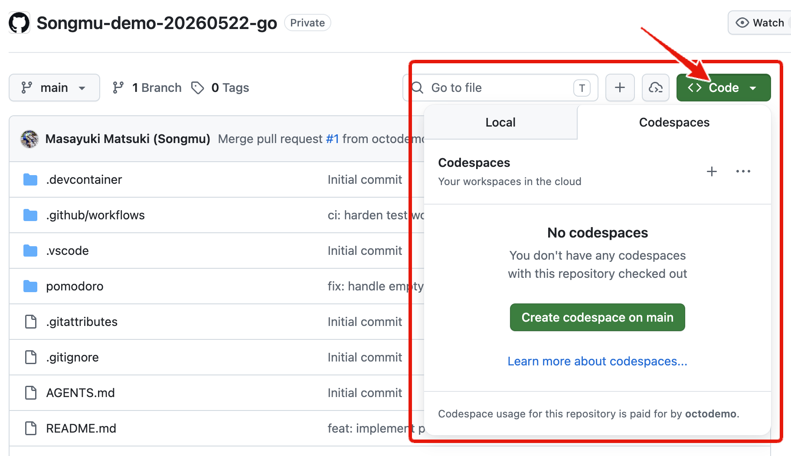

ここまでで、VS Code上で利用できるGitHub Copilotの基本的な使い方を学びました。次は、実際にアプリケーションを開発してみましょう。
今回のハンズオンでは、ポモドーロタイマーアプリケーションを開発します。このアプリケーションは、作業時間と休憩時間を設定し、タイマーを管理する機能を持っています。
以下のようなUIを持つアプリケーションを作成することを目指します。

今回はWebアプリケーションとして、pomodoro/ ディレクトリ配下に実装していきます。サーバーサイドはGoで実装するため、main.go が配置されています。
プロジェクトの概要
ポモドーロテクニック用のWebタイマーアプリケーションを作成します。
必要な機能
- 25分の作業タイマー
- 5分の休憩タイマー
- タイマーの開始・停止・リセット
- 進捗表示と統計機能
- ブラウザ通知とサウンド通知
- レスポンシブなWebUI
まず、いきなり実装を始めるのではなく、どういった方針・設計で進めるかをCopilotに相談してみましょう。ここから先は、Agentモードで進めていきます。Copilot Chatには"Agent", "Ask", "Plan" という3つのモードがありますが、デフォルトではAgentモードになっています。
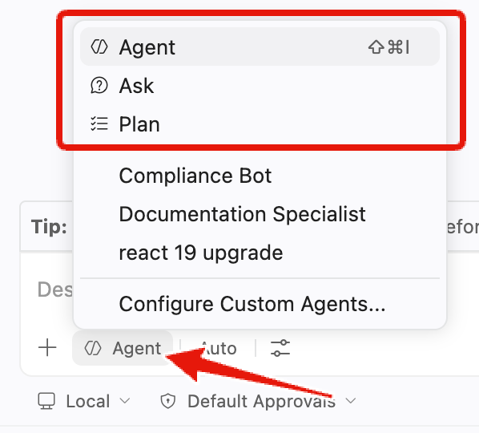
また、LLMの選択については今回は自動的に適したモデルを選択するAutoモードで進めていきます。Autoモードでは、タスクの内容や複雑さに応じて、最適なモデルが自動的に選択されます。
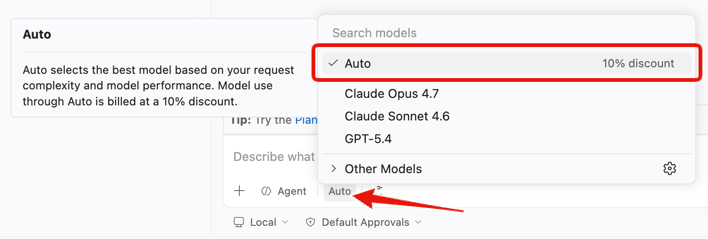
設計の相談
今回のようにUIを持ったWebアプリケーションを作成するにあたっては、UIイメージの画像をCopilotにコンテキストとして渡して理解してもらいましょう。
前ページのUIイメージはリポジトリの pomodoro/pomodoro.png に保存されています。チャット欄の Add Context をクリックし、「Files & Folders...」を選択します。そして、UIイメージの画像を選択しましょう。
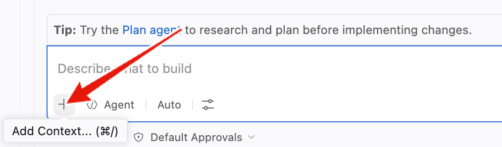
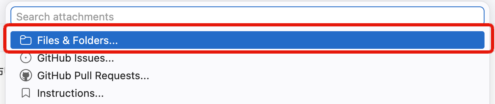
選択ができたら、Chatボックス内にそのファイル名がコンテキスト情報として表示されます。
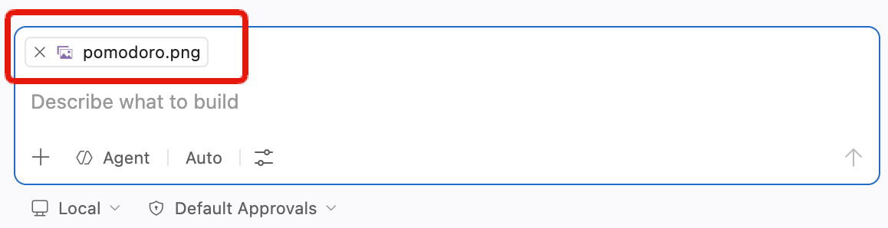
その上で、次のプロンプトを入力してみましょう。
このプロジェクトでポモドーロタイマーのWebアプリを作成する予定です。添付の画像はそのアプリのUIモックです。Goのnet/httpとHTML/CSS/JavaScriptを使用してこのアプリを作成するにあたって、どのような設計で進めるべきか、アーキテクチャの提案をしてください。
すると、推奨のWebアプリケーションアーキテクチャを提案してくれます。
このアーキテクチャに対して、もっとこうした方が良いという点や考慮不足の点があれば、それを指摘してみましょう。例えば次のような指摘です。
ユニットテストのしやすさという点を考慮して、今のアーキテクチャにもし改善や追加が必要な点があればそれも書き出してください。
このやり取りを経て、アーキテクチャの設計が固まったら、一度その内容をファイルに保存してもらいましょう。そうすることで、別のチャットセッションを開いても、同じアーキテクチャの内容を参照することができます。
ここまでの会話でアーキテクチャについては固まったので、これまでの会話の内容を踏まえて、プロジェクトのルートにarchitecture.mdというファイルに、Webアプリケーションアーキテクチャ案をまとめてください。
ここまでで、UIモックとアーキテクチャの設計が固まりました。具体的にどのような機能を実装する必要があるかを検討していきましょう。これもCopilot Chatに相談してみます。その際、pomodoro.pngとarchitecture.mdを添付しましょう。
このポモドーロタイマーアプリケーションを作成するにあたって、実装する必要のある機能を洗い出してください。

この内容もCopilotとのチャットを通して、改善していきましょう。内容が固まったら、アーキテクチャの時と同様にこの内容も features.md というファイルにまとめて保存しておきましょう。
ありがとうございます。その内容で良さそうなので、実装する必要のある機能一覧をfeatures.mdというファイルに書いてください。
では、ここから実装を始めるわけですが、Copilotを使いこなすコツとしては、一度に大きな機能を実装しようとするのではなく、まずは小さな機能から実装していくことです。これにより、Copilotが提案するコードの精度が上がり、よりスムーズに開発を進めることができます。
今回のアプリケーション開発を、どのような粒度で細分化して実装していくかについても、Copilotに相談してみましょう。ここでは、pomodoro.png、architecture.md、features.mdを添付しましょう。
このポモドーロタイマーアプリケーションを段階的に実装していきたいと考えています。
添付の画像とアーキテクチャ、機能一覧を踏まえて、どのような粒度で機能を実装していくべきか、段階的な実装計画を提案してください。
私が試したところ、6つのステップからなる計画を提案してくれました。この点についても、もっとこうしてほしいなどがあれば、Copilotに指摘してみましょｋう。そして、この内容も後で参照できるように、plan.md というファイルにまとめて保存しておきましょう。その際、どういうプロンプトで指示するべきかは、みなさん自身で考えてみてください。
ここまでの準備が整ったので、いよいよ実装に取り掛かりましょう。前のステップで提案された実装計画に従って、段階的に機能を実装していきます。
1. ブランチの準備
実装を始める前に、作業用のブランチを作成しましょう。 git switch -c feature/pomodoro としても良いのですが、ここではCopilotに作ってもらいましょう。
実装を進めたいので、作業用のブランチを作成してください。ブランチ名は feature/pomodoro としてください。
すると、Copilotはgitコマンドを使って良いかどうかを尋ねてきます。このように、エージェントが何かのコマンドを実行する前にはユーザーに確認を求めてきます。必要なコマンドを実行することを許可するために「Continue」をクリックします。
2. プロジェクト構成の準備
まずは、今回のアーキテクチャに従ったプロジェクトのディレクトリ構成を作成しましょう。
まずは、architecture.md のようなアーキテクチャを実現するにあたって、現在のプロジェクトのフォルダ構成を修正してください。必要に応じてファイルの移動や、設定ファイルの変更も行ってください。
その後、pomodoro.png, architecture.md, plan.md を添付した上で、次のようにCopilotに指示を出してみましょう。
plan.mdのステップ１を実装してください。その際、すでにこのプロジェクトにあるファイルを別のディレクトリに移動する必要があれば、その作業も実行してください。もし追加で考慮が必要なことがあれば、私に質問してください。
すると、私のケースでは以下のように検討が必要な質問をしてきました。こういった場合には、必要な情報を提供しましょう。

その後、Copilotは、ステップ1の実装を行います。実装が完了したら、Copilotは自らの判断でプロジェクトのビルドを行い、エラーがないかを確認します。エラーが発生した場合は、そのエラーを解決するために追加で修正を行います。このような自律的な動作が、エージェントモードの特徴です。
実装が完了したら、以下の点を確認してみましょう：
- ディレクトリ構造：推奨されたアーキテクチャに沿った構成になっているか
- 基本ファイル：必要な基本ファイル（
main.go、HTML テンプレート、CSS ファイルなど）が作成されているか - 動作確認：簡単な動作テストを行って、エラーが発生していないか
動作確認環境はCopilotが自動的に開いてくれることもありますが、わからない場合は次のように聞いてみましょう。
ブラウザで動作確認したいです。
Copilotがlocalhostでアプリケーションを起動してくれます。Codespaces環境ではPort Forwarding機能を使って自動的に動作確認のための一時的なURLを生成してくれます。エディタ下部のアンテナアイコンからFowardingの状況を確認できます。
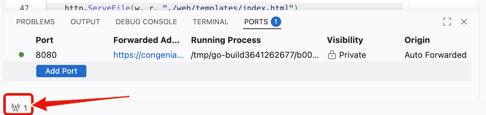
以下が、私の場合のステップ1の実装結果です。この段階でどのようなアプリケーションになっているかは人によって異なるでしょう。

このまま実装を続ける前に、実装した機能に対してユニットテストを書いておきましょう。ユニットテストを書くことで、後のステップでの変更が既存の機能に影響を与えないことを確認できます。
もし前ページの段階でユニットテストも実装されている場合は、このページは読み飛ばしてください。
テストの実装
次のようなプロンプトを実行してみましょう。
現在の実装に対して、ユニットテストが全くないので、ユニットテストを実装し、実行してください。
テストに失敗した場合は、そのエラーを解決するために必要な修正も行ってください。
すると、Copilotがユニットテストのコードを記述して実行・修正までおこなってくれます。Copilotがgo testなど何かのコマンドを実行する前には、ユーザーに確認を求めてきます。もし、そのコマンドを実行してエラーが発生した場合、エージェントはエラー解決のための修正を自律的に実施します。
残りの機能も同様にステップごとに進めて行けば良いわけですが、残りを一気に実装してみましょう。
ここでは、ロングタスクを自律的に完遂してくれるAutopilotという機能を使います。VS CodeでAutopilotはpermission levelの選択肢として用意されています。Autopilotでは、Copilot がファイルの作成・編集やコマンドの実行を確認なしで自律的に進めるため、大規模な実装を一気におこなってほしい場面に適しています。
Copilot ChatのPermission LevelをAutopilotに変更しましょう。デフォルトでは"Default Approvals" となっているところを "Autopilot" に変更します。
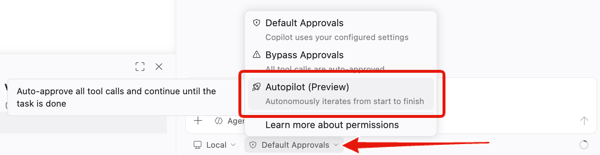
Autopilotを選択すると、以下のような警告が表示されます。Codespaces上で有効にする分にはリスクも少ないので、"Enable" を選択しましょう。
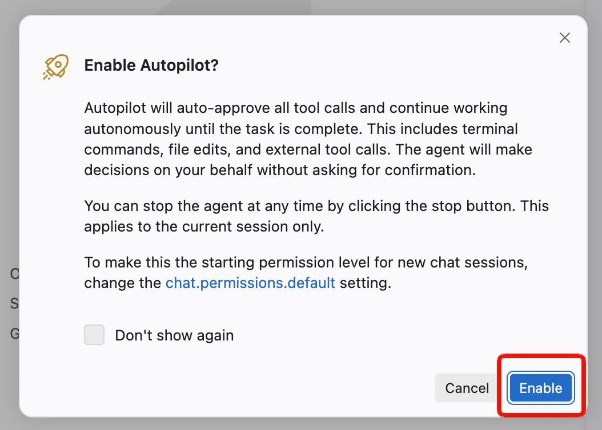
設定が終わったら、次のように指示してみましょう。
plan.mdのフェーズ2以降の内容をすべて実装してください。
各ステップでは実装と共にテストコードも作成し、動作を確認した上で次のステップに進んでください。
うまく設定できてれば、Copilotが自律的に実装を進めてくれます。この実装は10分程度かそれ以上かかると予想されるので、休憩してコーヒーでも飲んで待ちましょう。
ここから先のステップでは、GitHub.com上でのCopilot機能やCloud Agentを使用します。そのために必要な設定がされているか確認しましょう。
1. Copilot 機能の有効化
GitHubで利用可能なCopilot機能を有効化しましょう。
- GitHubの右上のプロフィールアイコンをクリック
- Copilot settings を選択

以下の機能を有効化してください：
- Editor preview features - エディタのプレビュー機能
- Copilot code review - コードレビュー機能
- Copilot Cloud Agent - 自律的なコーディングエージェント
2. リポジトリの Issues と Actions を有効化
⚠️ この手順は、Issues や Actions が無効になっているユーザーのみ対象です。 すでに有効になっている場合はスキップしてください。
テンプレートから作成したリポジトリでは、デフォルトで Issues と Actions が無効になっている場合があります。後のステップで使用するため、無効になっている方は有効化しておきましょう。
Issues の有効化
- 自分のリポジトリの Settings タブをクリック
- General セクションの Features を確認
- Issues にチェックを入れる
Actions の有効化
- リポジトリの Actions タブをクリック
- 「I understand my workflows, go ahead and enable them」をクリックして有効化
さて、CopilotがAutopilotで実装を進めている間に、いくつか役に立つであろうポイントをここでは紹介します。
UIに対して指示をしたい場合
UI上の特定の要素に対して指示を出したい場合は、UIのスクリーンショットをCopilotにアップロードすることで、その要素を認識させることができます。その際、スクリーンショットの上に特に指摘したい箇所を丸で囲むなり、矢印を引くなりして、どの要素に対して指示を出したいのかを明確にすると良いでしょう。
または、現状のスクリーンショットと、期待するスクリーンショットを2枚アップロードすることで、その差分を確認してもらい、期待するUIにできるだけ近づくように指示を出すこともできます。
毎回同じような指示を出している場合
プロンプトを書いたり、文脈を指定する際に、頻繁に同じような指示を出している場合は、Copilotにその指示を覚えさせることができます。具体的には、プロジェクト内に .github/copilot-instructions.md というファイルを作成し、その中に指示を書いておきます。このファイルがあると、Copilotはその指示を自動的に読み込み、以降のチャットでその指示を参照することができます。
以下にカスタム指示のサンプルを示します。
このプロジェクトは、ポモドーロタイマーをFlaskで実装するものです。
以下はプロジェクトの重要なファイルです。ユーザーの指示に対して、必要に応じてこれらのファイルを参照してください。
- `pomodoro.png`: アプリケーションのUIモックです。
- `architecture.md`: アプリケーションのアーキテクチャドキュメントです。
- `features.md`: 実装する機能の一覧です。
- `plan.md`: 段階的な実装計画です。
そのほかにも、プロジェクトをビルドするコマンドやテストを実行するコマンドなど、プロジェクトに特有のコマンドを記載しておくと、Copilotはそのコマンドを自動的に使用するようになります。
なかなか実装が進まなかったり、バグを解決できない場合
このような場合には、以下のアプローチを試してみましょう。
- デバッグ情報を出力するように指示し、その出力をCopilotに分析させる。
- 他のモデルを試してみる。
さて、後半は主にGitHub.com上のCopilot機能を使用していきます。まずは、作成したコードをGitリポジトリにコミットしてリモートブランチにPushしましょう。ここでは2つの方法を紹介します。
方法A: ターミナルでコマンドを使用
従来の方法として、ターミナルでGitコマンドを直接実行する方法です：
git add .
git commit -m "ポモドーロタイマー機能を追加"
git push origin feature/pomodoro
方法B: Copilotによるコミットの作成
エージェントモードでCopilotに直接指示してコミットとPushを行います。以下のプロンプトを実行してください：
機能の作成が完了したので、コードの差分をgitのステージングにあげてください。
その後、適切なコミットメッセージでコミットいただき、リモートブランチに変更をPushしてください。

【オプション】MCP サーバーによる GitHub Issues の自動起票
続いて、MCP サーバーを使用して実装計画をGitHub Issuesとして管理することもできます。
plan.mdの各ステップをGitHub issuesとして起票してください
この指示により、Copilotは以下を実行します：
plan.mdの内容を読み取り- 各ステップを個別のIssueとして起票
- 各Issueには以下が含まれます：
- ステップのタイトルと詳細説明
- 実装すべき機能の要件
- 受け入れ条件
- 適切なラベルと優先度
これにより、計画的なプロジェクト管理とアジャイル開発が可能になります。

Pushした後の内容について、GitHub.com上でPull Requestを作成しましょう。その際、CopilotにPull Requestの概要を生成してもらいましょう。
- GitHub上で自分のリポジトリにアクセス
- Open a pull request をクリック
- Pull Request作成画面で、Copilotのアイコン » Summary をクリック

Copilotが自動的にPull Requestの概要を生成してくれます。
Pull Request上で、Copilotのコードレビュー機能を活用してみましょう。
Copilotをレビュワーとしてアサイン
Reviewers セクションで Copilot をアサインすることで、Copilotをレビュワーとしてアサインし、コードのレビューを依頼できます。

Copilot Code Reviewは少し時間がかかるので、待っている間にCopilot Cloud Agentに別の修正を依頼しましょう。Pull Requestのコメントで @copilot とメンションしながら修正依頼を指示することで、Copilot Cloud AgentがGitHubのクラウド上で動作してコードの修正を行い、Pull Requestに追加コミットしてくれます。
前半ではCopilotにテストコードは作成してもらいましたが、それをGitHub上のGitHub Actionsで動かせるようにはしていなかったため、そのためのワークフローを追加してもらい、CIを回せるようにしてみましょう。次のようにコメントしてみてください。
自動テスト用のGitHub Actions用のワークフローを加えてください。 @copilot
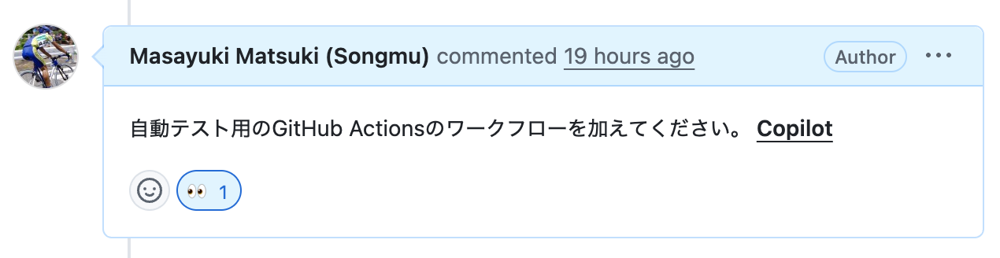
Copilotがコメントに 👀 で反応し、Cloud Agentのセッションが起動してコードの修正を行い、Pull Requestにコミットしてくれます。
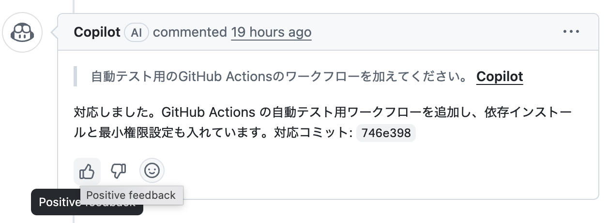
Copilot Code Reviewの結果を閲覧しましょう。Copilotは以下のようなコメントを残してくれます。
- Pull Requestのオーバービュー: コードの変更内容の要約
- 指摘事項: 潜在的な問題点の指摘
- 改善提案: コードの品質向上のための具体的な提案
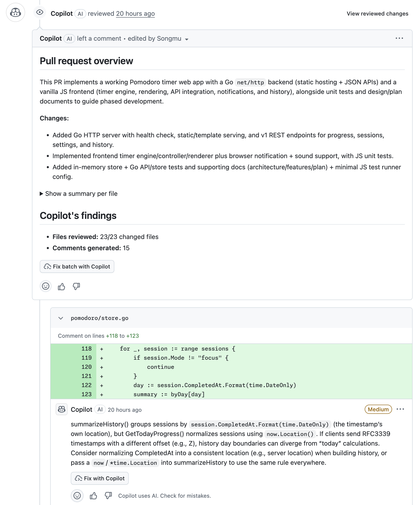
単純な修正であればコメント上に "Suggested changeset" として提案されるので、"Commit suggestion" をクリックして修正と取り込めます。複雑な変更の場合でも "Fix with Copilot" をクリックすれば、Cloud Agentのセッションが起動して自動的にコードの修正を行い、変更をPull Requestにコミットしてくれます。
必要な修正を取り込んで、テストがすべてパスしたら、Pull Requestをマージしましょう。
GitHub CopilotのWebサイト版を使用して、プロジェクトの改善提案をIssueとして自動生成し、Cloud Agentを活用してみましょう。
GitHub Copilotでのissue自動起票
- GitHub.com にアクセスし、右上の Copilot アイコンをクリック
- Chatのコンテキストに自身のリポジトリが追加されていることを確認
- 以下のプロンプトを入力します：
ポモドーロタイマーのカスタマイズを行うために３つのissueを起票してください。
パターンA: 視覚的フィードバックの強化
円形プログレスバーのアニメーション: 残り時間に応じて滑らかに減少するアニメーション
色の変化: 時間経過に応じて青→黄→赤にグラデーション変化
背景エフェクト: 集中時間中は背景にパーティクルエフェクトや波紋アニメーション
テスト目的: 視覚的な没入感がユーザーの集中力に与える影響を測定
パターンB: カスタマイズ性の向上
時間設定の柔軟化: 25分固定ではなく、15/25/35/45分から選択可能
テーマ切り替え: ダーク/ライト/フォーカスモード（ミニマル）
サウンド設定: 開始音/終了音/tick音のオン/オフ切り替え
休憩時間カスタム: 5/10/15分から選択
テスト目的: 個人の好みに合わせた設定がユーザー継続率に与える影響を測定
パターンC: ゲーミフィケーション要素の追加
経験値システム: 完了したポモドーロに応じてXPとレベルアップ
達成バッジ: 「3日連続」「今週10回完了」などの実績システム
週間/月間統計: より詳細なグラフ表示（完了率、平均集中時間など）
ストリーク表示: 連続日数のカウント表示
テスト目的: ゲーミフィケーション要素がモチベーション維持と継続利用に与える影響を測定

Issueの作成とCloud Agentのアサイン
- Copilotが3つのIssueを自動生成します
- 各Issueの内容を確認し、必要に応じて編集
- Create ボタンをクリックして各Issueを作成
- Issue画面に遷移後、Assignees セクションで Copilot を選択してCloud Agentをアサイン

期待されるPull Requestの結果
Cloud Agentがアサインされると、以下のような結果が期待できます：
- 自動的なコード実装: 各Issueの要件に基づいた機能実装
- Pull Requestの作成: 実装完了後の自動PR作成
- 包括的なテスト: 単体テストとUIテストの両方を含む
パターンA: 視覚的フィードバックの強化

パターンB: カスタマイズ性の向上

パターンC: ゲーミフィケーション要素の追加

今日学んだこと
このワークショップでは以下のことを学びました：
- GitHub Copilot の基本的な使い方
- エージェントモードでのコードの解説・改善
- AI をコントロールしながら実装するスペック駆動開発
- 強力なモデルとツールを用いた AI 駆動開発
次のステップ
- 実際のプロジェクトでCopilotを活用してみる
- より複雑なアプリケーション開発に挑戦する
- Copilotの新機能をキャッチアップする
リソース
お疲れさまでした！